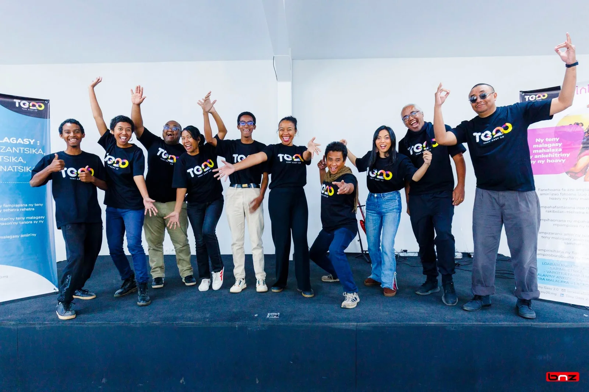
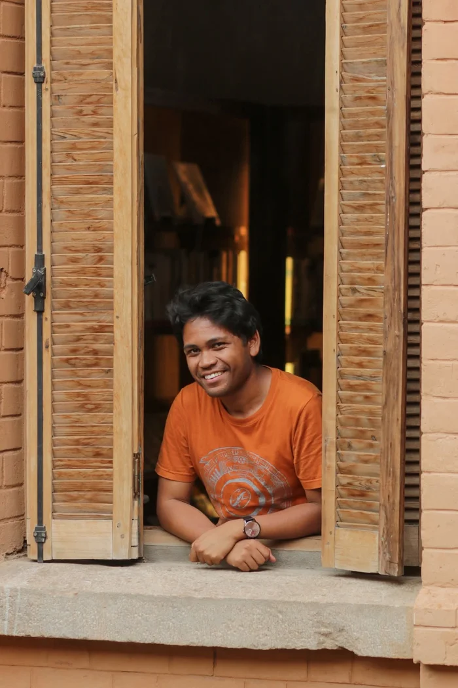

Olona vitsivitsy maromaro, avy amin'ny sehatra sy tontolo marolafy, natambatry ny fitiavana ny teny malagasy.

Mitondra ny teny malagasy any amin'ny sehatra tsy ampoizina, izay no tena fahafinaretan'i Voniary. Tiany horesahina sy hosoratana amin'ny teny malagasy daholo izao rehetra izao. Ny nofinofiny dia mba hirehareha ny Malagasy rehetra hampiasa ny teny malagasy, amin'ny fotoana rehetra sy amin'ny toerana rehetra, indray andro any.
Niaina taona maromaro tany Katalôgna sy Galisy, faritra mitaky ny fahaleovantenany any Espana i Tinà ka nahita ny hafanam-pon'ireo vahoaka mitolona mba hanomezan-danja ny teniny. Nirehitra be ny hambom-pony ka vonona be ny hitolona ho an'ny teny malagasy koa izy.
I Hobiana no zokibe mampita ny hafatra avy amin'ireo razambe. Izy no mampatsiahy hatrany ny soatoavina malagasy sy ny fanahin'ny teny malagasy ary indrindra manindrom-paingotra mba hanajana ny tsipelina sy ny fitsipipitenenana.
I Nantenaina irery no nisafidy hiditra ao amin'ny zanatsehatra malagasy tamin'ireo mpianatra 50 iray kilasy taminy. Izy irery koa angamba no nanao izany tao amin'io Sekoly Masina Misely. Adala angamba izy e! Izy anefa resy lahatra fa hisandratra ary hitondra ny teny malagasy hisandratra.

Tsy mahita tory matetika i Joro satria maro ny fanontaniana ao an-dohany ao ka tiany hovaliana avokoa. Mamaky boky sy mamorona lahatsoratra famakafakan-kevitra no mampilamina ny sainy rehefa tonga ireny fotoana ireny. Ny olombelona, indrindra ny Malagasy no anisany lohahevitra ankafiziny.
Madagasikara hafa, misy teknôlôjia avo lenta sy fiarahamonina mandroso, efa noforoniny. Lalaoantsary miteny malagasy, efa noforoniny. Rakibolana an-jotra sy aplia ahitana voambolana malagasy aman'aliny, efa noforoniny. Dia mbola tsy mitsahatra mamorona ho an'ny teny malagasy foana izy hatramin'izao.